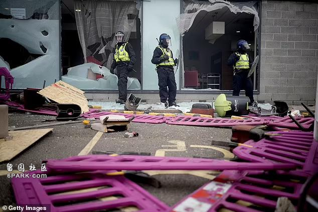
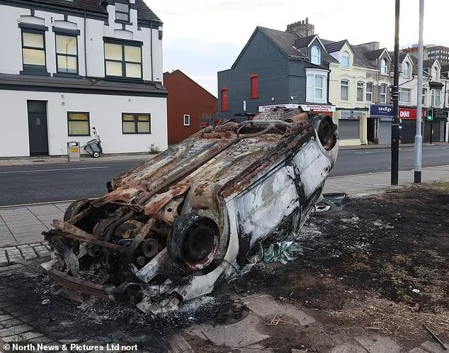
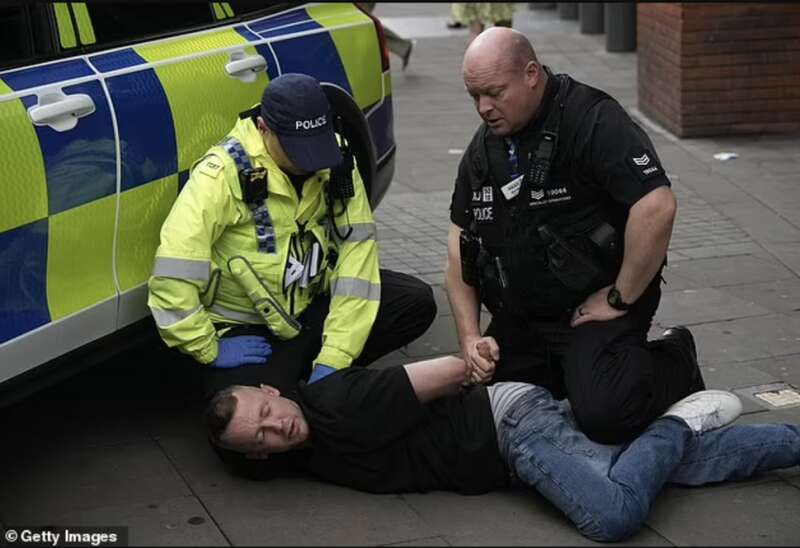

据英国《每日邮报》当地时间8月5日头版头条报道，最近六天，英国爆发了一系列暴力骚乱事件，当地时间5日上午，英国首相基尔·斯塔默爵士在唐宁街主持了一次“眼镜蛇”紧急会议，旨在讨论如何应对不断升级的暴力行为。然而，伦敦大都会警察局长马克·罗利爵士走出会场时，愤怒地抓起一名记者的麦克风并摔在地上，引发关注。
首相主持的眼镜蛇紧急会议
这些骚乱始于南港的一起三名儿童被刺杀事件，随后迅速蔓延至其他地区，引发了极右翼暴徒的袭击和社会动荡。为了应对这一危机，英国首相基尔·斯塔默爵士于今天上午主持了一次眼镜蛇紧急会议。会议旨在讨论如何有效应对极右翼暴徒的持续暴力行为。与会的高级部长包括内政部长伊维特·库珀、司法部长沙巴纳·马哈茂德等。他们与警察局长和监狱服务领导人进行了深入讨论，并提出了一系列具体行动方案。
基尔爵士在会议上承诺，将组建一支由专业警察组成的“常备军”来应对动乱。这支常备军将确保在需要的地方迅速部署足够的警力，以遏制暴力事件的发生。此外，他还强调将加强刑事司法，对参与骚乱的人进行快速逮捕和起诉，并确保网上和线下的犯罪行为都将受到法律的严惩。
大都会警察局长摔记者麦克风
在处理骚乱危机的过程中，大都会警察局长马克·罗利爵士的行为引起了广泛关注。在离开关于英国骚乱危机的紧急会谈时，一名记者问罗利爵士此次事件中，英国警方是否采取了“两级警务”—这一词汇自BLM运动起被广泛使用，暗示警方在处理不同抗议活动中存在不同态度，有所偏袒。
罗利爵士愤怒地抓住记者的麦克风并将其摔在地上。事后，一位警方发言人表示，罗利爵士急于返回新苏格兰场，以便立即采取行动应对危机。而关于两级警务，发言人坚决否认这一指控，强调警方的职责是确保每个人的安全，无论其背景如何。
极右翼暴徒的暴力行为

自上周南港刺杀事件以来，极右翼暴徒在全国范围内发动了一系列袭击，目标包括警察、寺庙和庇护所，他们抢劫商店，抢走手机、葡萄酒、洞洞鞋，焚烧图书馆。
在罗瑟勒姆和塔姆沃思等地，暴徒攻击警察，造成多位警察受伤，警方在应对这些暴力事件时，逮捕了数百名嫌疑人，并将他们快速移送法庭处理。然而，极右翼暴力的背后，隐藏着更深层次的社会问题和种族主义情绪，这是更令人担忧的。
以下为英国警方披露的各地被逮捕人员情况：
贝尔法斯特
一名53岁男子：被指控袭击警察、抵抗警察和扰乱秩序的行为。
一名46岁男子：被指控反抗警察和行为不检。
一名38岁男子：被指控持有进攻性武器，意图实施可起诉的罪行，无证持有烟花，暴乱行为和无序行为。
一名34岁男子：被指控参加未经通知的公开游行。

布里斯托尔
阿德里安·克罗夫特（45岁，弗林特郡霍利韦尔市）：被指控犯有第4条公共秩序罪和持有A类毒品。
达米安·威廉姆斯（39岁，诺尔市Stockwood Crescent）：被指控犯有第4条公共秩序罪。
利物浦
加雷斯·梅特卡夫（44岁，南港剑桥花园）和约翰·奥马利（43岁）：被指控犯有暴力骚乱。
一名14岁男孩（托克斯特斯）：被指控在利物浦市中心犯有暴力骚乱。
亚当·沃顿（28岁）和埃利斯·沃顿（22岁）：被指控犯有住宅以外的入室盗窃罪，亚当·沃顿认罪，将于8月29日被判刑，埃利斯·沃顿还被指控袭击一名紧急救援人员。
桑德兰
乔什·凯利特（29岁，华盛顿州Southcroft）：承认了暴力骚乱罪，被还押候审，直到9月2日在皇家法院判刑。
安德鲁·史密斯（41岁）：承认暴力骚乱罪，并被还押候审至同一天。
肖恩·多兰（48岁，桑德兰）：对暴力骚乱罪不认罪。
克林顿·莫里森（31岁，桑德兰）：被指控暴力混乱，今天被还押候审，皇家法院听证会日期定在9月2日。
韦茅斯

一名42岁男子（约维尔）：因涉嫌违反公共秩序而被捕。
一名62岁男子（约维尔）：因醉酒和混乱而被捕。
一名27岁男子（韦茅斯）：因袭击被捕。
图源：DAILYMAIL